商业分析实战——字节跳动竞争力分析——以TikTok为例
摘 要： 企业核心竞争力是企业取得持续竞争优势之根源， 如何识别、分析和评价核心竞争力对企业培育、应用和更新核心竞争力具有重要的作用。本文以TikTok 为研究案例，首先对字节跳动的产品战略、市场策略、盈利模式、竞争分析四个维度对其进行定性分析，描述了其商业逻辑及特点，基于定性分析的结果从核心竞争力的本质层面出发识别并构建了企业核心竞争力的指标体系，并将模糊数学引入层次分析方法，应用层次分析法（AHP）建立各指标权重，利用模糊评价法（FCE）对企业核心竞争力的各重要因素进行多层次综合评价，最终根据竞争力评价标准运用以上评价体系对 TikTok 的竞争力进行评价研究。
关键词： 核心竞争力； TikTok； 层次分析法；模糊综合评价法
一、产品战略（Product Strategy）
产品战略（Product strategy）产品战略是企业对其所生产与经营的产品进行的全局性谋划。它与市场战略密切相关，也是企业经营战略的重要基础。企业要依靠物美价廉、适销对路、具有竞争实力的产品，去赢得顾客，占领与开拓市场，获取经济效益。产品战略是否正确，直接关系企业的胜败兴衰和生死存亡。
一家企业或组织的产品战略按 “产品组合优化” 的视角包括三个层面：（1）产品项目 （2）产品线 （3）产品组合，即按层次递进的方式从单一产品元素到纵向线性维度的产品线再到多维泛化组合的多元产品策略构成企业整体的产品战略。
下文将按上述三个层面对不同维度的产品战略进行描述：
1、Single Product（单个产品）
针对单个产品的产品战略制定一般需考虑市场环境、用户、供给侧、竞品、代替品五个方面，且此五个方面可构成一个倒三角模型，如下所示：

- 市场环境：这里我们重点去看三个要素，分别是存量、稳定性、持续性。
- 用户：我们看用户的时候看两个维度，一个是规模、另一个是变现能力。
- 供给侧：供给侧的重点看数量和健康程度。
- 竞品：除商品价格、功能、运营手段外，更需要关注对方的优势和犯过的致命错误。
- 代替品：技术革新、场景替代、时间蚕食三个角度对代替品审视
如用字节旗下的短视频产品、资讯类产品进行战略对比时我们可以从以下维度思考，从而为制定该产品的战略做参考，如下所示：
短视频类：

资讯类：

2、Product Line/Portfolio（产品线/简介）
产品线(Product Line) 是指一群相关的产品，这类产品可能功能相似，销售给同一顾客群，经过相同的销售途径，或者在同一价格范围内。 如果能够确定产品线的最佳长度，就能为企业带来最大的利润。产品线，是指同类产品的系列。一条产品线就是一个产品类别，是由使用功能相同、能满足同类需求而规格、型号、花色等不同的若干个产品项目组成的。
同样以字节跳动旗下的产品进行描述：

图中如属于咨询分发领域的资讯、短视频、拍摄美化、百科问答等各个横向领域均为不同的产品线，属于统一产品线内的产品均属于同一类别，且功能相似、可满足用户同类需求，如上文对比过的抖音、西瓜视频、火山小视频都隶属于短视频产品线，但其各产品的如目标用户、内容特点、视频时长等产品细节功能点不同或呈互补的态势。
一家企业或组织在对自身所拥有的产品线进行战略规划时所需考虑的有以下因素：
- 产品线的宽度：所拥有的产品线数目
- 产品线的长度：每一条产品线内的产品品目数
- 产品线的深度：每一生产产品目内的品种数称为产品组合的深度，如某品牌牙膏具有多种口味与香型，这些就构成了该牙膏的深度。
- 产品线的相关度：不同的产品线在性能、用途、渠道等方面可能有某种程度的关联，这叫相关度
以上四方面的考虑将为确定我们最终的产品战略提供相应的依据，即最终我们将根据组织内产品线的宽度、长度、深度、相关度等与组织的外部环境综合考虑，适当的调整产品线战略以便形成最优的产品组合，进而获得最大利润。
3、Platform/Architecture（平台/结构）
一家企业整体的产品结构即可称之为该企业的一种产品组合，产品组合(或产品搭配)是指一个企业提供给市场的全部产品线和产品项目，或是一个企业在一定时期内生产经营的各种不同产品、产品项目和产品线的组合。
根据波特的竞争策略得知，一家企业应同时拥有多种产品进而进行多元化经营的战略，此举可有效的化解单一产品的衰退所带来的巨大风险，同时，按以上两个层次分析与对比的结果最终将对企业的产品项目、产品线进行有效的组合，从而增加企业的竞争力及盈利能力。
同样以字节跳动企业为例，我们进一步来考虑产品组合（产品矩阵）战略制定的细节：
- 字节跳动产品矩阵：成功坐拥“资讯分发+短视频”两大流量入口
字节跳动已经推出多种类型的APP，涵盖聚合类资讯、短视频、垂直类资讯、内容社区等多个领域，在业界被称为“APP工厂”。目前字节系APP的使用总时长超过百度，仅次于腾讯系应用。
（1）资讯产品矩阵：算法+内容，打开移动互联网流量新入口
今日头条是国内最早一批把人工智能结合到移动应用场景中而推出的个性化信息推荐引擎产品，自2012年8月上线后，凭借算法编辑+智能分发，在资讯类APP中异军突起。艾媒北极星系统监测显示，今日头条APP，2018年日活和月活用户仅次于腾讯新闻，2018年12月月活跃用户达到1.65亿俨然成为互联网流量的新入口。
同时，作为世界上最具价值的独角兽企业字节最为核心的竞争力便是：日活和月活用户数。在制定最终产品战略时，我们往往会关注企业的关键指标随产品发展历程的变化从而适时的调整战略。

第一阶段：产品的初创期(2012成立之初到2014年12月)：
产品功能：头条在这个阶段重点完善用户数据、推荐算法和推荐策略，提升产品亮点。同时也不断完善产品功能和形态，优化用户体验，包括关注、头条号、评论、转发等都是在初创期完成。
发展策略：初创期，侧重发展更多注册用户和获取更多新闻内容，在渠道和内容上做管控。一方面，头条为了用户增长，与华为，小米等手机厂商合作预装载。另一方面，在2013年被多家媒体投诉以后，与各家媒体签订合同，授权允许头条转载。
第二阶段：成长期(从2015年到2017年7月)：
产品功能：经过初创阶段，头条的算法已经成熟，开始关注产品功能和优化用户体验，版本迭代速度加快，大量全新开始内容呈现和分发，上线汽车频道(后独立为懂车帝APP)、头条问答(升级为悟空问答)等。
发展策略：进入成长期后，头条没有像其他APP一样，做大量运营活动去拉新。而是建立一支国内最大规模增长黑客团队，提升用户活跃度。随着增长团队的策略，头条也开始做营收，在信息流中插入推送广告，广告收入迅速增长，盈利模式开始成熟，营收从2016 年50 亿元大涨到2017 年的150 亿元。本阶段，头条的知名度也越来越大。
第三阶段：成熟期(2017年8月至今)：
产品功能：进入成熟期后，头条的产品迭代的节奏变慢，大多数为功能优化。但随着产品矩阵的成型，开始上线小视频，接入西瓜视频、火山小视频。
发展策略：从2017年到18年，核心运营从用户增长转向收入增长，广告收入开始连年翻番。另外一个方面就是头条开始尝试其他变现方式，比如做电商和做知识付费。
(2)短视频产品矩阵：差异化定位+智能算法+精细化运作，成就短视频赛道霸主地位
头条系3款短视频产品处于领跑地位，差异化定位盘活短视频矩阵

（3）其它业务布局：多元化发展，推动流量变现
- 上线多闪，试水视频社交：从短视频切入，导入抖音流量
- 教育、游戏、金融多元化布局：教育（推出gogokid，对标VIPKID）、游戏（运营分发+游戏直播，进军游戏产业）、金融（上线“放心借”产品，进军个人消费贷业务）
（4）海外布局：从0到1，把握海外互联网红利
- 海外产品简介：“自产+收购+投资”三路齐驱，成功复制国内产品矩阵，初尝海外佳绩
- 海外市场前景：移动互联网蓝海待开发，海外流量变现可期
综上所述，企业的产品组合中往往存在着几个现象级的拳头产品，故在整个企业的产品矩阵中应充分考虑每个产品的特点、产品线的合理规划以及不同产品线之间的交融互补，期间我们也可采用竞争分析的策略（波特五力分析、PEST分析）、产品优化组合策略（SWOT、产品寿命周期法）等方法为最终的产品战略提供相应的参考！
二、市场策略
第一阶段：探索期（2016年6月到2017年5月）
2016年5月-9月，字节跳动瞄准短视频市场，分别针对不同人群，先后上线西瓜视频、火山小视频、抖音三款短视频软件。
市场定位如下：
- 头条视频：(2017年6月改名西瓜视频)从今日头条 APP 的短视频功能脱离，以PGC(专业生产内容)短视频内容为主
- 火山小视频：模仿快手，定位于三四线小镇青年
- 抖音：模仿国外Musical.ly软件，进行去“快手”化，专注于年轻人的音乐短视频社区
本阶段，西瓜视频为重点发展对象，2016年9月头条视频日活跃用户突破 100 万，2017年新年，西瓜视频举办“随机红包”活动进行拉新。2017年5月数据显示，西瓜视频日活跃用户超过1000万。抖音在本阶段，属于蛰伏期，重心是打磨产品，不断优化产品性能和体验。2017年3月13日，著名喜剧明星岳云鹏转发了带有抖音水印的短视频微博，正式进入大众视野。百度数据显示，百度指数3月开始飞涨，超过西瓜视频和火山小视频。
第二阶段：成长期（2017年7月到2018年4月）
本阶段，字节跳动在短视频领域开始大量砸钱，西瓜视频和火山小视频重点放在内容的搭建上，而抖音的重心放在产品的市场推广上。
火山小视频：
2017年5月16日，火山小视频宣布将在未来12个月拿出10亿元聚焦补贴小视频内容，市场营销活动包括：
- 邀请 MC天佑等网红将入驻，
- 与极限挑战、爸爸去哪儿等综艺节目深度合作（剧情植入、品牌曝光、明星入驻、专属贴纸），
- 推出“火苗计划”，开通视频打赏功能和小视频达人培训计划，帮助短视频创业者实现商业变现
抖音：
抖音在本阶段，开始大规模砸钱投放广告，对外精准营销，塑造了抖音“潮”、“酷”、“时尚”的品牌形象，精准定位一二线城市青年；专题活动上，抖音 APP 内的社区通过建立视频模板，制作教学视频，发起社区挑战等多种方式，来引导客户进而提升内容质量；对外的品牌营销上，抖音通过明星、传播性 H5、品牌广告、线下活动等方式，多层次、多方面进行宣传，效果显著。2017年7月14月，两款现象级H5《世界名画抖起来》、《找啊找啊找爱豆》迅速刷爆朋友圈，2017年7月，赞助选秀节目《中国有嘻哈》，该节目的音乐类型与抖音的产品定位和目标用户特性非常贴合，节目中的一些音乐曾屡次在抖音中掀起音乐风暴。
在2018年春节期间，增加《百万英雄》答题赢钱活动的入口后，抖音彻底火爆全国，从2018年1月月活跃用户2000万，成倍增长至2018年3月的1.3亿。
第三阶段：成熟期(从2018年4月到至今)
本阶段，抖音开始寻求流量，2018年12月抖音月活跃用户达2.3亿，，反超快手的月活用户数，2020年月活达4亿，渠道上：罗志祥、邓紫棋、陈赫等大量一线明星入驻，带来大量的粉丝群体，并辅以模仿秀、发起挑战等话题营销方式，央视新闻、各省官方新闻号等权威机构入驻带来了更多权威性、优质性的内容，新冠病毒影响下，买断14部电影版权《囧妈》[6亿买估值20亿打底]等免费面向用户，带来大量的用户，堪称经典营销案例（一箭三雕：发行方、字节、观众）。宣传上：诸如上述的综艺、明星的营销活动，同时与社交媒体打通，让小视频可以利用庞大的人际关系网络和用户主动性实现“病毒式营销”。
西瓜视频和小火山视频则定位更加精细化，也更加依靠内容来吸引用户：
- 火山小视频定位于“行业百科全书”，于2018年7月10日推出“百万行家”计划：未来一年投入10亿元的资源，面向全国扶持职业人群、行业机构和MCN，覆盖范围包括烹饪、养殖、汽修、装潢等各行各业，旨在帮助搭建一个职业化人群交流展示的平台。
- 西瓜视频则定位聚合多元文化的综合视频平台，拥有首页、小视频、直播主版块以及综艺、影视、懂车帝、游戏、体育等多个小版块，2018年8月宣布未来一年将投入40亿，以“All in”的状态打造移动原生综艺IP。
三、盈利模式、竞争分析
一、盈利模式：两大核心产品盈利模式成熟，但海外盈利面临挑战
字节跳动的两大核心产品今日头条和抖音均通过广告等途径，实现了很好变现。凭借信息流广告，2016 及2017 年，今日头条为字节跳动带来分别约为 60 亿元和 150 亿元左右的广告收入，2018年抖音更是获得营收在200亿元左右。
字节跳动互联网广告的特点在于通过AI技术，实行千人千面的精准广告营销。主要模式有开屏广告、信息流广告、开屏联播及视频广告四种类型。其中，信息流广告为今日头条 APP 和抖音最主要的广告形式。今日头条APP其以“文字描述+图片/视频展示”的形式内嵌于新闻资讯内容流中，并基于用户的地域、人口和兴趣属性进行精准投放。
字节跳动国际化扩张喜忧参半，TikTok在印度市场得到了广泛应用，但却被美国用户冷遇。2018年TikTok在美国市场依靠Facebook、YouTube等老牌社交平台的导流，仅谷歌的广告花费达3亿多美元，，而Tiktok在美国的30天用户保留率约为10%，且2017年年底又花费10亿美元收购Musical.ly。据The Information报道，字节跳动在2017年略有盈利，而2018年有可能亏损12亿美元。
1.1盈利前景——多元布局
字节跳动从用户中寻求更大变现能力已经迫在眉睫，字节跳动也早已在变现方式上进行尝试。
(1)加大垂直领域投入，如字节跳动旗下懂车帝有较强的发展势头。
(2)今日头条加入信用卡、电商、游戏等增值服务，促使流量变现。
(3)进军电商，抖音加入电商模块，通过网红带货搭建内容电商平台。
(4)抖音推出了热搜榜、MCN合作、广告接单平台星图和企业蓝V计划，进一步加强平台的广告营销能力。
1.2投资布局：注重文娱投资，快速布局教育行业
字节跳动投资领域横跨文娱、社交、企业服务、教育培训、金融、电子商务，自2015年起，投资/并购事件超过50次。其中，文娱传媒为重点布局领域，投资事件数量超过17次。进入2018年以来，字节跳动快速布局教育行业，短期内投资/并购了7家教育类公司。


1.2.1 文娱布局
字节跳动投资的文创领域可细化为文娱传媒(包括内容创作)和社交社区等。
文娱传媒方面，为拓展资讯内容和增加版权资产，字节跳动收购了老友科技tiki、简图、花熊等公司，并投资华尔街见闻、极客公园、机器之心、新智元、财新世界说等资讯媒体，快看漫画、声影动漫等原创漫画平台，游戏短视频MCN薇龙文化等项目。
2018年1月，今日头条成立规模2亿元的内容投资基金，投资早期新媒体内容创业项目，并优先关注短视频项目。2018年12月，The Information报道，字节跳动有意建立一个100亿元规模左右投向人工智能和内容领域的风险投资基金。字节跳动出资月20%，其他资金或将来自包括中国政府主导的大型基金、国有投资银行等外部投资者共同出资。
社交社区方面，也将是字节跳动的重要发力点。投资了二次元创作社区半次元社区、图片社交花熊、视频社交产品老友科技、私密家庭移动社交安心家庭、校园答题社交summer校园、K歌社交软件音遇、社交工具Faceu等公司。其中Faceu利用技术与用户和其他短视频产品形成协同效应的产品，目前在拍照类APP中影响力仅次于美图系的美图秀秀和美图相机;维境视讯主要致力于研发VR视频采集、拼接、编码及传输软硬件解决方案。从投资项目来看，字节跳动投资布局的主要战略方向，是以创意社交吸引年轻用户，为年轻用户的创作提供更为便利的工具。
1.2.2 教育布局
字节跳动自2018年起开始大量投资/并购教育行业公司，包括一起作业、晓羊科技、AIKID、学霸君B端业务等。对标VIPKID，推出gogokid的英语品牌，面向12岁以下学龄儿童，提供一对一北美师资外教课程。
1.2.3 收购锤子科技部分专利权
2019年1月，字节跳动收购锤子科技部分专利使用权，可能用于知识付费和硬件的相关业务，或将集中于教育领域。根据工商数据显示，今年1月14日，北京字节跳动科技有限公司新增“字节锤子”商标6个，其所述类别有“软件产品、科学仪器”、“广告、销售、商业服务”、“教育、娱乐服务”、“科研服务”、“社交、法律服务”、“电讯、通信服务”。iiMedia Research(艾媒咨询)分析师认为，字节跳动当前缺乏重资产项目，而重资产项目相对盈利能力强，变现能力稳定，字节跳动目前收购锤子科技部分专利权只是字节跳动加强重资产建设的第一步，未来还会有后续动作。
二、竞争分析
2.1 挑战与困难
2.1.1 资讯分发和短视频行业增速放缓，增量或成难题
2018年中国移动互联网月度活跃智能设备规模增至11.3亿，全年净增仅4600万，同比增速已放缓至4.2%。而字节跳动资讯分发和短视频两条赛道的行业红利也在逐渐减弱，iiMedia Research(艾媒咨询)数据显示， 2018年中国短视频用户规模达5.01亿人，预计2019年用户规模增速下降至25.1%，增速同比下降80%以上，资讯分发和短视频行业增长速度双双放缓。

2.1.2 媒体行业受国家严格监管，且自身内容IP缺乏
字节跳动所处的资讯分发和短视频行业，本质上都属于媒体行业，且字节系产品大多重视下沉市场，但下沉市场用户大多对低俗、暴力、打色情擦边球的内容很感兴趣，字节系产品也用这些内容来博人眼球，这样的确吸引了大量用户。但内涵段子就因此被关闭。此外，抖音制造“红人”的模式依靠更新、更潮、更有趣的内容来吸引用户，在内容创作上或有游走“红线”边缘的冒险者存在，这使字节跳动面临着监管的不确定因素。
字节跳动内容IP积淀少，购买版权和培育IP的巨大投入或成为阻碍公司持续发展的一大障碍。字节跳动仅依靠算法来搬用内容起家，自身缺乏原创IP据知情人士透露，2017年今日头条在购买传统媒体版权上的投入就超过1亿元。2018年8月西瓜视频更是将在未来一年投入40亿，打造移动原生综艺IP。
头条系海外拓展的过程中同样也存在版权和监管问题的隐患，海外不用国家/地区的文化、法律以相差巨大，字节系产品很容易会触犯不同国家/地区的文化习俗和法律法规。比如2018年7月，印度尼西亚的交通和信息科技部对TikTok下达了“封杀令”，指责其平台充斥着“淫秽、色情，及其他不合时宜的内容”。2019年2月海外版抖音被指控侵犯儿童隐私，最终字节跳动同意支付570万美元(近3812万人民币)罚款，和美国联邦贸易委员会(Federal Trade Commission，简称FTC)达成和解。因此全球化进程中版权和监管问题是重要隐患。
2.1.3 内容靠补贴聚集，无法形成孵化和培育内容的平台
字节跳动的资讯类和视频类产品主要依靠大额补贴去聚集内容，再通过算法分发内容去吸引流量流入，本质这种算法+内容来聚集的商业模式，既不是有效的工具类产品(如百度地图、搜狗输入法)，不能形成有效自我孵化和培育内容的平台(如新浪微博)，从而无法持续。如今日头条APP需要购买传统媒体版权和补贴“头条号”创作者来获取内容，从而吸引用户继续使用。
抖音与头条系其他产品不同，其有发展成孵化和培育内容的平台的可能性。但抖音更新更有趣的内容壁垒不高，同时会有内容创作匮乏和网红资源匮乏的风险，且因抖音暂无社交粘性，产生的网红无法有效留存。抖音等短视频产品需要不断地内容创新以保持对用户的新引力，如果创意枯竭，内容平台之间用户迁移较为普遍。当前短视频产品网红以年轻女性为主，年轻女性正处于婚育年龄，在一批网红逐步退出舞台后能否有一批新网红出现是抖音等短视频产品需要面对的风险。
2.1.4 算法和团队优势，在BAT面前不能构成壁垒
字节跳动的优势在算法和优秀的运作团队，但BAT本身主业护城河稳固，技术积淀深厚，人才储备充足，字节跳动凭借算法和团队不足以形的对抗BAT的壁垒。
技术上，BAT每年研发投入巨大，AI布局在国内遥遥领先。2018年BAT均入围全球企业研发投入TOP100，阿里巴巴集团研发支出29.14亿欧元;研发投入/研发占销售比率9.1%，腾讯研发支出22.35亿欧元，研发投入/研发占销售比率7.3%;百度研发支出16.58亿欧元，研发投入/研发占销售比率15.3%。。AI技术上，百度在图像识别、自动驾驶、机器翻译和语音识别四项领域领先，阿里巴巴在云计算领域领先，腾讯则是在大数据领域领先。AI专利水平和人才储备方面，BAT也是优势明显，在AI投资并购、渠道声量等方面，更是BAT三家独大。
人才储备上，BAT在技术、产品、运营方面各有所长，且国内AI人才储备是目前以BAT为主，百度更是AI人才的黄埔军校。
2.1.5 头条系的信息流广告转化率低
字节跳动信息流广告的特点在于通过算法技术，实行千人千面的广告推送。iiMedia Research(艾媒咨询)分析师认为，因字节跳动的信息源不足，广告的推送精准度不如百度。且头条系广告主要靠“猜”，现阶段算法技术水平还无法达到用户心中的所想，广告效果难以预估，但百度坐拥占有全国市场份额第一的搜索引擎，用户可以在搜索引擎上提出需求，而百度根据用户提出的需求，精准对接资源。
2.2 机遇与前景
2.2.1 5G和AI等新技术落地，视频社交可期
人工智能将引领全球第四次工业革命浪潮，而5G是下一轮科技革命的制高点。3G/4G(通信)+智能手机(电子)驱动了移动互联网科技浪潮，并逐步向上传导到应用(手游等)、内容(规频等)端。5G时代的到来和AI技术的成熟，将催生新的智能终端崛起，随之而来的是社交领域的变革，新的生活模式的产生。5G和AI等新技术的落地，将推动短视频社交或以短视频为主，结合语音、图文的形式出现。字节跳动凭借抖音、西瓜视频、火山小视频等产品，占据了短视频赛道头把交椅，且拥有强大的算法技术实力和高效的运营团队，而管理层多为80后，创新意识强，能及时把握年轻一代的需求，在社会领域，公司未来极有可能实现弯道超车。
2.2.2 海外移动互联网蓝海待开发
在资讯分发和短视频领域，国内互联网红利基本见顶，智能手机渗透率也将近饱和，而海外市场移动互联网市场存在诸多机遇。《2019全球数字报告》统计，2018全球互联网用户为 43.88 亿，移动手机使用用户39.89亿，其中南亚、东南亚、南美等地区增速明显，尚处于移动互联网洼地。2018年印度的网民增加了9789万人，增长了21%。而坦桑尼亚，增长率高达173%，阿富汗，增长率达到142%。字节跳动以算法技术为内核，拥有高效的增长团队和商业化团队，能低成本复制国内产品矩阵，能有效把握海外互联网市场红利。
2.2.3 “AI+”行业应用前景广阔
麦肯锡研究显示，在2030年人工智能可能为全球额外贡献13 万亿美元的GDP 增量(相较于2018年)，平均每年推动GDP增长约1.2个百分点，足以比肩人类历史上前三次通用技术革命(蒸汽机、电气化、信息化)带来的影响。我国人工智能产业形成了相对完整的产业链条。
随着国内扶持政策落地，行业产业链和配套服务的完善，“AI+”行业应用发展将得到加速和深度融合。字节跳动注重AI技术研发，拥有行业领先的人脸识别、语音识别技术，有望在AI+”行业应用中分一杯羹。
四、基于模糊多层次评价法的TikTok竞争力研究
1.引言
随着移动互联网的不断迭代升级，移动短视频的媒体形式已成为更加符合当今互联网用户使用习惯的视频内容展现方式，短视频也已变成了内容媒体潮流的引导，其中抖音、快手两款热门为例的“现象级”短视频应用在短时间内迅速成为人们手机中的必备APP。据《2018 年中国网络版权产业发展报告》显示，2017 年，短视频在中国的用户数量已经突破了4亿，同比去年增长 115%，2018年7月，短视频的月活跃用户数已经达到5.08亿左右，约占国内网络用户的46%，预计2020 年短视频行业规模会接近350亿，同时，随着2020年5G网络的逐步普及，短视频也将会迎来新一轮爆发性增长的极佳机会[1]。
在如今的商业环境中，人们越发重视企业战略管理理念的研究，尤其是有关核心竞争力理论的研究为企业的经营带来了极大的应用价值[2]，根据该理念，一个公司在行业中是否具有强大的竞争力取决于其自身是否有一定的优势资源，企业通过总结并合理利用所拥有的优势资源便形成了企业自身的核心竞争力。目前我国的互联网行业，尤其是短视频领域正处在快速成长、群雄逐鹿中原的时代，谁都可能被迅速的取代，因此，研究短视频行业的核心竞争力将有利于我国短视频行业的持续发展，同时为中国互联网的整体发展提供了科学的理论基础[3]。
基于以上分析，本文首先给出了研究问题并介绍了与其相关的理论基础，通过公开数据集和相关研究报告中的数据识别了TikTok的核心资源，对相关资源进行对比分析并按其功能的不同做出分类，之后以此为基础构建了TikTok的竞争力指标体系，按其类别和维度的不同将体系划分三个层次，即目标层、主准则层和分准则层，接着，我们将模糊数学的理论引入到层次分析法中，采用定量与定性相结合的方法确定指标体系中各层指标的权重，并按层次结构的顺序确定各层指标的隶属度，通过矩阵间的量化计算依次获取各层指标的模糊矩阵，最后根据规定的竞争力评价标准对TikTok的竞争力进行综合评价并给出最终评价结果。
2.理论综述与研究现状
2.1 核心竞争力的定义及特点
企业核心竞争力从根本上来讲是企业持有的为企业提供前进动力并帮助企业实现长远发展的各类资源、特有物质的总和。本文认为核心竞争力的特点分为以下几类[2]：（1）价值性：企业核心竞争力最根本的特点，具体分为顾客价值和市场价值。（2）不可模仿性：企业的竞争对手无法经过购买、模仿等手段来得到企业独有的能力。（3）延展性：延展性表示核心竞争力带来的作用不仅适合用在某一种服务或产品，它还能延展到其他有关的领域和产品，帮助企业进一步扩大其经营范围。（4）稳定性：核心竞争力与企业本身密切相关，既无法脱离企业独自存在，也无法用于交易或交换，具有一定的稳定性。（5）动态发展性：不存在稳定不变的核心竞争力，根据外部环境的变化，企业需要保持对管理方面的更新，加强本身资源能力的储备积累，通过不断积累和系统整理，使企业的核心竞争力持续提高和攀升，保证与其他竞争者相比拥有更强大的核心竞争力。
2.2 模糊多层次评价法
层次分析法（The Analytic Hierarchy Process，AHP）：它的基本理论是把若干个相对复杂的问题，首先根据层次逐步分解，然后按层次分析。层次分析法的判断矩阵是专家依据各指标和经验打分构造的，具有明显的主观性，通常导致结果准确度不高。
模糊层次分析法（Fuzzy AHP）：是把模糊数学和层次分析法（AHP）相结合，以模糊数学做为理论根据，推导出多个制约因素的最可能模糊度，然后根据评价目标，对问题做出最合理的决策。也就是把指标的定性评价转化成定量判断的方法，从而可以很好判断了事物的客观性质，解决了不确定性事物之间关于综合评价的复杂问题。对一个复杂问题进行剖析，将其简化分解为各类因素的组合关系，从而根据不同隶属关系的分类，推导出评价指标层次结构，通过个层级两两比较，求出各类因素的权重。
2.3 国内、外研究进展
3.模糊多层次评价体系构建与分析
3.1 TikTok的核心竞争力识别
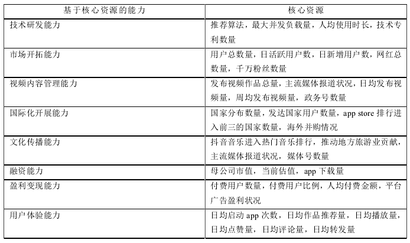
3.2 建立指标评价体系
目前用来评估核心竞争力的较为常用的方式有下述三个，即多目标综合评价法、复杂总体评价法、简单总体评价法。所谓的多目标评价又叫作多元评价，其基于相应的评价指标体系，另外对评价对象实施相应的全方位的系统分析，从而获得相应的评价结论。对于企业核心竞争力来说，其隶属多目标综合评价的范畴，另外因为其有着模糊性以及层次性的特点，所以通常使用多层次的模糊综合的评价方法。
在上文中涉及到的有关评价标准为核心竞争力的特征，从而得到了抖音短视频的关键能力，并结合影响其核心竞争力的关键因素建立了抖音短视频核心竞争力的相应的评价指标体系，且各级指标同时满足了动态发展性、稳定性、延展性、不可模仿性、价值性五大特征，如下表所示：
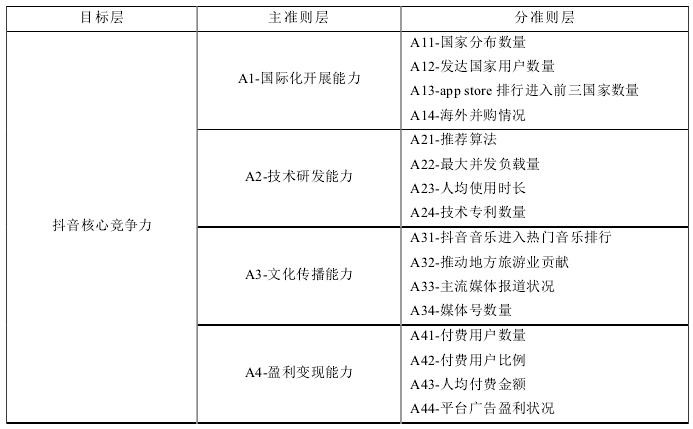
抖音的相关指标体系的相应的主准则层 4 项的核心能力组成了一级指标，也就是 A=(A1,A2,A3,A4)，A1 到 A4 指的是企业的 4 项核心能力。对于每项主准则层来说，其相应的指标是由很多个二级指标组成的，也就是说A1=(A11,A12,A13,A14),A2=(A21,A22,A23,A24),A3=(A31,A32,A33,A34),A4=(A41,A42,A43,A44)，在这里Aij指的是每项的二级指标。
3.3 TikTok模糊多层次分析法评价
（1）确定指标体系的层次结构
（2）指标权重的确定
由（1）中确定的层次结构出发，首先在同一个层次把所有之间的两两对比，可以判断出这一层的所有指标相对上一层的重要程度，按1—9级标度法从而得到对应的判断矩阵X（据相关数据得），
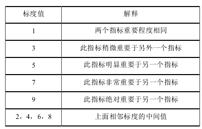 判断矩阵X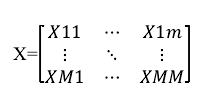
根据对相对权重值的运算结果推导m 阶矩阵的特征向量和最大的特征值。则可以运算出判断矩阵的最大特征值，再由最大特征值解特征方程得其对应的特征向量，最后进行归一化处理得到最后的评价指标权重向量。
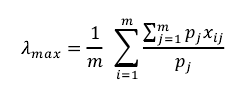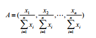
在确定最终的权重向量前需对该判断矩阵实施相应的一致性检验，因为判断矩阵必须要进行一致性检验，才能得到这个判断矩阵是合理还是不合理，他的一致性指标 C.I.如下所示，计算随机一致性的指标比率 C.R 的数学方程如下，一般情况下，假如 C.R.<0.10 ，则就可以说明这一判断矩阵适用于计算随机一致性指标。最终得到各一级指标得主准则和各分准则的权重向量P=（P1，P2，P3，P4）和Pi=（Pi1,Pi2,Pi3,Pij）。
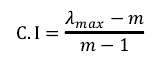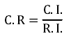
（3）核心竞争力评语集的确定
在评级核心竞争力时–针对各二级指标，可以将其分为一定等级，如某指标Y所对应的评价向量为Y=（Y1,Y2,Y3,Y4）=（很强，较强，一般，差）（由专家调查问卷得–研报数据）
（4）确定各指标隶属于评语集的隶属度
根据（3）中得评语集得到全部二级指标的有关隶属度，可得出所有一级指标的模糊评价矩阵R1、R2、R3、R4，也为各二级指标所对应的权重矩阵。
（5）计算各一级指标的模糊向量
由一级指标的模糊矩阵与下级一级指标有关权重矩阵做相乘运算（层次分析法原则），可以得到这个一级指标对应的模糊向量（有关隶属度），由此可构造出综合模糊矩阵 R。
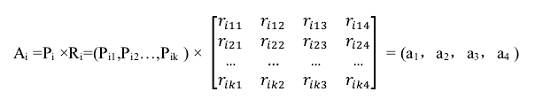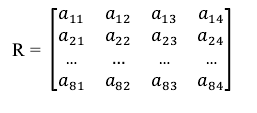
（6）TikTok核心竞争力的综合评价
最终由所得到的各一级指标所构造出的模糊矩阵R与由（2）所得出的一级指标所对应的权重向量P相乘（层次分析法原则），并对其结果进行归一化处理后可得到最终的模糊多层评价结果（4x1的评价向量）
4.TikTok竞争力评价
（1）各级指标权重的确定
这里我们选用艾媒咨询、国海证券等相关专业机构的研报数据作为专家打分的依据，依据相应的层次分析模型首先建立了各级指标的判断矩阵，另外通过Python建立模型并求解，最终获得主准则层以及相应的分准则层的权重。
首先判断主准则层的四项核心竞争力的权重，即国际化开展能力、技术研发能力、文化传播能力和盈利变现能力，结果如下表所示。
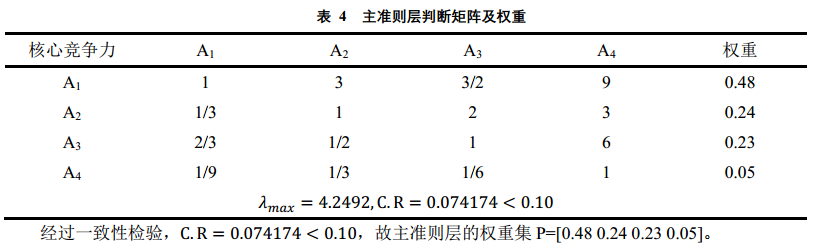
经过一致性检验，C.R=0.074174<0.10，故主准则层的权重集P=[0.48 0.24 0.23 0.05]。
之后针对分准则层，依次对国际化开展能力、技术研发能力、文化传播能力和盈利变现能力进行权重判断，由核心资源表中各自对应的四项准则进行两两对比打分后得出关系判断矩阵，进而进行各一级指标的权重计算，结果如下：
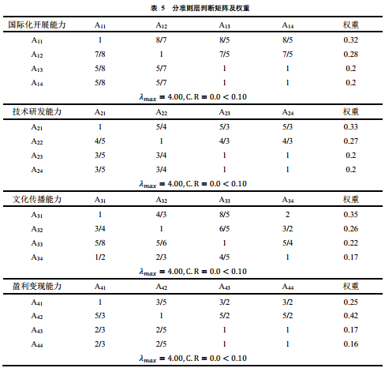
经过一致性检验，各一级指标的C.R=0.0<0.10，均通过了一致性检验，经上述计算过程，我们可得到主准则层的权重集P=[0.48 0.24 0.23 0.05]，分准则层中，国际化开展能力所对应的权重集P1=[0.32 0.28 0.2 0.2 ]，技术研发能力所对应的权重集P2=[0.33 0.27 0.2 0.2 ]，文化传播能力所对应的权重集P3=[0.35 0.26 0.22 0.17]，盈利变现能力所对应的权重集P4=[0.25 0.42 0.17 0.16]。
（2）指标隶属度及模糊矩阵的计算
这里我们利用专家咨询法和相关研报的分析结果按照评语集的要求对各二级指标进行评价打分，由此可得出下四矩阵所式结果，该表可作为二级指标的模糊矩阵，之后按层次分析法的要求逐级计算各层所需的模糊矩阵。
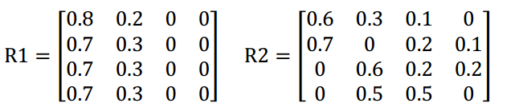
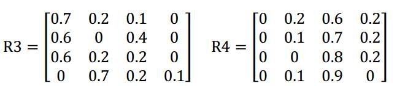
以上R1、R2、R3、R4矩阵可看作为二级指标的权重矩阵，也可称其为二级指标的模糊矩阵，在此基础上再通过层次分析法进一步计算各一级指标的相关隶属度，具体计算即Ai=Pi x Ri，故我们可依次得到国际化开展能力、技术研发能力、文化传播能力和盈利变现能力所对应的模糊向量A1、A2、A3、A4，进而可由此得到研究问题的综合模糊评价矩阵R=[A1，A2，A3，A4]^T。
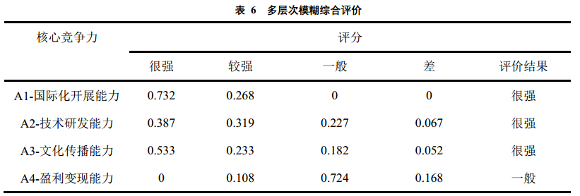
（3）多层次综合评判[9]
我们将上步所得到的模糊矩阵R与权重向量P进行相乘，再对所求结果进行归一化处理，具体计算过程如下所示，式中：“○”为模糊运算符，本文采用最值最大值算子以突出影响研究目标的主要因素。
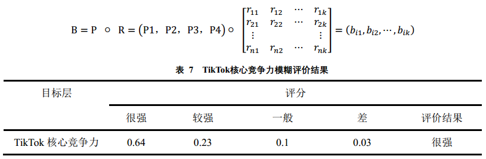
5.结语
综上所述，本文首先对TikTok的核心竞争力进行了识别并以此建立了企业竞争力评价指标体系，将模糊数学引入了层次分析法，采取了了定量与定性相结合的方法对研究问题进行了对比分析，同时在竞争力评价指标体系的基础上构建了模糊多层次评价模型，针对国际化开展能力、技术研发能力、文化传播能力和盈利变现能力在内的四个一级指标及其所对应的二级指标进行了量化分析，结果表明，TikTok的国际化开展能力、技术研发能力和文化传播能力三种核心竞争力表现突出，为企业带来了极大的市场竞争优势，同时TikTok的盈利变现能力仍有较大的进步空间，综合看来，TikTok的市场竞争力比较强劲，同时对于该企业所拥有的核心资源的分析对比也为行业内外的其他企业带来了参考与借鉴意义，同时本文所提出的研究方法也丰富了衡量企业竞争力的方法理论体系，为进一步研究企业竞争力提供了有效的借鉴经验。
5.参考文献
[1]. 陈安庆. 5G 时代短视频内容迎新井喷期[N]. 中国新闻出版广电报,2019-03-05(005).
[2]. 项国鹏.知识管理与企业核心竞争力的培育[J].南开管理评论，2001， 4(6):30-33.
[3]. 张明新.媒介竞争与分析[M].华中科技大学出版社,2011:P22.
[4]. 胡恩华,单红梅,陈燕.企业核心竞争力的识别及综合模糊评价[J].系统工程,2004(01):48-51.
[5]. 白璐．企业核心竞争力评价指标体系设计[J]．大连海事大学学报（社会科学版），2009，(4)：96-98．
[6]. 彭利利，张永安．基于模糊层次分析法的AF 公司核心竞争力评价[J]．经贸实践，2016，(4)：310-313．
[7]. 冯祈善，赖纯见，赵仁勇.基于AHP 的企业核心竞争力评价[J].重庆大学学报:自然科学版，2002， 25(4):99-102.
[8]. 孙博,肖汝诚.基于层次分析-模糊综合评价法的桥梁火灾风险评估体系[J].同济大学学报(自然科学版),2015,43(11):1619-1625.
[9]. 姚敏,张森.模糊一致矩阵及其在软科学中的应用[J].系统工程,1997(02):54-57.